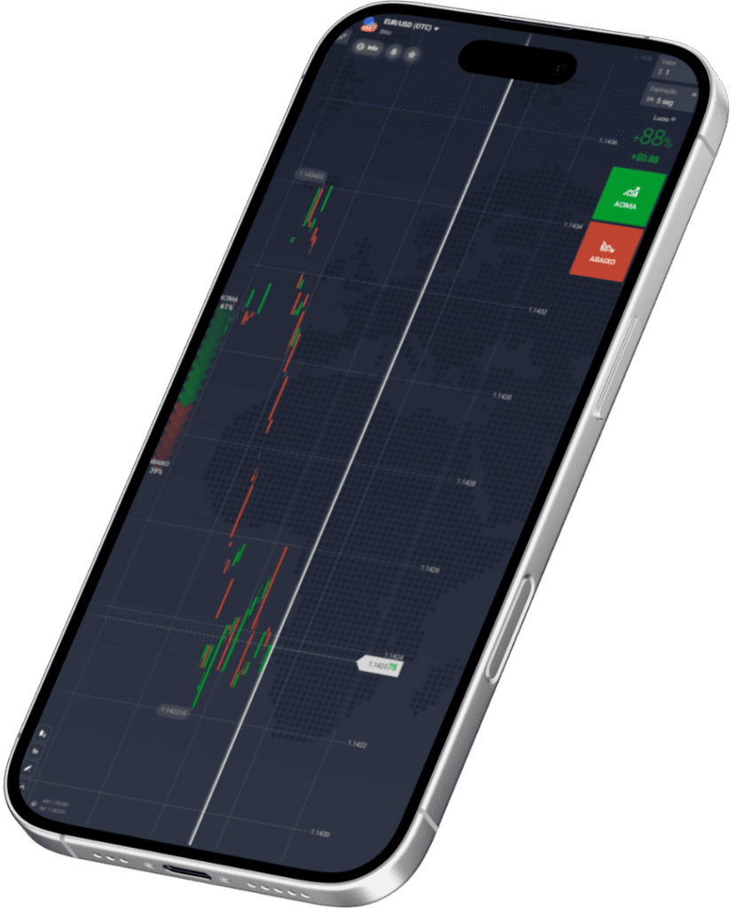

+de 30 ativos para operar
SAFIRION
Aproveite cada movimento do mercado
Conecte-se ao futuro das operações financeiras com a Safirion — onde tecnologia de ponta e suporte especializado se unem para oferecer oportunidades exclusivas.

- Ativos
- +30disponíveis para operar
- Segurança
- 2FAcom criptografia avançada
- Aplicativo
- iOS · Androidopere também pelo celular
- Suporte
- Humanizadoequipe técnica especializada
Maximize Seus trades Com a Safirion.
Ferramentas Tecnológicas ao Seu Alcance!
Finalize as suas operações de forma Justa
Trabalhe com +de 30 ativos de forma simples e fácil
Suporte Profissional e Humanizado
Selecione seu método de pagamento favorito, faça o depósito com facilidade e solicite seus ganhos sempre que desejar.
ENTRE NA CORRETORA AGORA >A plataforma
O Que é a Safirion?
A Safirion Broker é uma plataforma digital voltada para operações com ativos financeiros de forma moderna, prática e sem burocracia. Combinando agilidade, proteção de dados e tecnologia de alto desempenho, a plataforma foi projetada para atender usuários que buscam total controle sobre suas operações.
Baseada em um modelo inovador, a Safirion permite que os usuários operem com liberdade em mercados alternativos e tradicionais, sem depender de instituições financeiras convencionais. Tudo isso em um ambiente seguro, transparente e com estrutura pensada para iniciantes e traders mais avançados.
Com foco na experiência do usuário, a Safirion oferece um sistema intuitivo, suporte técnico especializado e recursos que facilitam tanto o aprendizado quanto a execução de estratégias no dia a dia.
Ao eliminar barreiras e simplificar processos, a plataforma se posiciona como uma solução acessível e eficaz para quem deseja explorar o universo financeiro digital com confiança e autonomia.
REALIZE SEU CADASTRO >Como funciona
Como funciona a Safirion?
A Safirion opera por meio de uma estrutura digital segura e automatizada, permitindo que usuários negociem ativos com total praticidade e autonomia.
Após o cadastro e a validação de identidade, o investidor tem acesso à plataforma para realizar depósitos, escolher ativos e iniciar operações conforme seu perfil e estratégia.
Durante o processo de negociação, a safirion atua como mediadora confiável, monitorando e validando cada etapa da transação para garantir que tudo ocorra de forma justa e transparente.
Todas as operações são processadas com segurança e agilidade por um sistema inteligente que reduz riscos e acelera a liberação de ativos.
Projetada para escalar com estabilidade, a plataforma oferece um ambiente robusto e eficiente tanto para quem está começando quanto para traders mais experientes.
Segurança
Segurança em primeiro lugar
Na Safirion, cada detalhe foi pensado para proteger você e seus ativos em todas as etapas da jornada.
Utilizamos tecnologia de ponta com múltiplas camadas de segurança, incluindo criptografia avançada, autenticação em dois fatores (2FA) e monitoramento constante de transações suspeitas.
Todos os dados são tratados com sigilo absoluto e armazenados em servidores seguros, seguindo os melhores padrões internacionais de proteção digital.
Nosso compromisso é garantir um ambiente confiável para que você possa investir com tranquilidade e foco nos seus objetivos.
CRIE SUA CONTADiferenciais
Por que escolher a Safirion?
A Safirion foi criada para quem busca mais do que uma plataforma de negociação — ela entrega performance, segurança e total controle na ponta dos seus dedos.
Com tecnologia de última geração e uma operação totalmente automatizada, oferecemos um ambiente onde agilidade e proteção caminham juntas. Aqui, o usuário encontra suporte eficiente, interface simples de usar e transações realizadas com total transparência.
Ao eliminar barreiras operacionais e otimizar processos, proporcionamos uma experiência fluida, confiável e acessível para todos os perfis de investidor.
Seja você um iniciante ou um operador experiente, a Safirion é a escolha certa para quem valoriza autonomia, eficiência e resultados consistentes no universo financeiro digital.
Cadastro
Como se cadastrar na Safirion
O processo de cadastro na Safirion foi desenvolvido para ser rápido, intuitivo e totalmente seguro.
Em apenas alguns passos, você cria sua conta e já pode começar a operar com confiança e autonomia.
Passo a passo para criar sua conta:
- Acesse o site oficial da Safirion: https://safirion.com.br
- Clique em “Criar conta” no topo da página;
- Preencha seus dados pessoais no formulário de registro;
- Crie uma senha forte e aceite os termos de uso;
- Confirme o cadastro por e-mail;
- Faça login e explore a plataforma.
Pronto! Seu acesso está liberado.
Agora é só aproveitar as oportunidades e operar com liberdade e segurança na Safirion.
Recursos
Recursos da nossa plataforma
A Safirion oferece um conjunto de funcionalidades robustas, desenvolvidas para garantir eficiência, segurança e controle total durante as operações.
Confira os principais recursos disponíveis:
Custódia inteligente e automatizada
Os ativos são mantidos em segurança até a confirmação do pagamento, assegurando confiança nas transações peer-to-peer.
Painel de operações intuitivo
Gerencie ordens de compra e venda com clareza, agilidade e total visibilidade de cada etapa.
Verificação KYC reforçada
Processos de validação rigorosos garantem conformidade legal e mais proteção para todos os usuários.
Histórico completo de transações
Tenha acesso detalhado a todas as suas movimentações com registros organizados e facilmente acessíveis.
Notificações em tempo real
Acompanhe o status das suas operações com atualizações automáticas no momento em que cada ação ocorre.
Suporte técnico especializado
Uma equipe preparada para oferecer atendimento ágil e soluções eficientes sempre que necessário.
Mobilidade
App Safirion
Tenha o controle das suas operações financeiras direto no seu celular com o aplicativo da Safirion.
Desenvolvido para Android e iOS, o app oferece uma experiência completa e segura, com acesso total às funcionalidades da plataforma onde quer que você esteja.
Através de uma interface moderna e responsiva, é possível acompanhar ordens em tempo real, realizar negociações com rapidez e receber atualizações instantâneas sobre suas atividades.
Perfeito para quem valoriza mobilidade, praticidade e alto desempenho, o aplicativo da Safirion leva toda a eficiência da plataforma para a palma da sua mão.
iOS
Android
Comece agora
Pronto para elevar sua experiência no mercado financeiro?
Na Safirion, você encontra uma plataforma moderna, segura e pensada para oferecer agilidade, confiança e controle total em suas negociações.
Crie sua conta em poucos minutos e tenha acesso imediato a um ambiente eficiente, transparente e totalmente escalável.
Dê o próximo passo. Descubra uma nova forma de operar com a Safirion.
Comece AgoraFAQ
Dúvidas Frequentes
Selecione a pergunta abaixo e tire as suas dúvidas.
01Qual o saque e depósito mínimo?
O valor mínimo pode variar, mas geralmente começa em R$50. Verifique na área de depósito para confirmar o valor exato.
02Posso tirar dinheiro quando eu quiser?
Sim. Basta solicitar o saque a qualquer momento dentro da plataforma.
03Posso operar pelo celular?
Sim. A plataforma é compatível com navegadores móveis e também está disponível por app.
04Como abrir um chamado de suporte?
Acesse o menu “Ajuda” ou “Suporte” dentro do painel e envie sua solicitação.